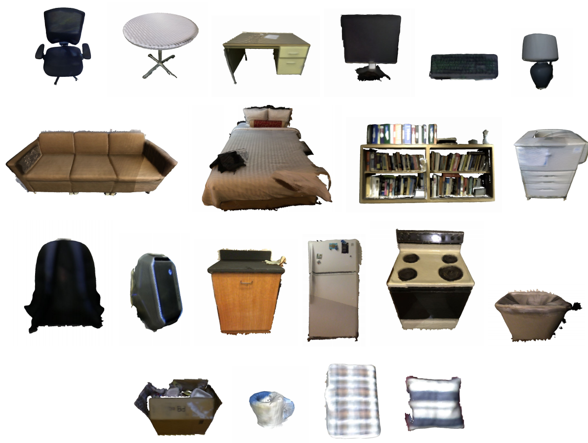
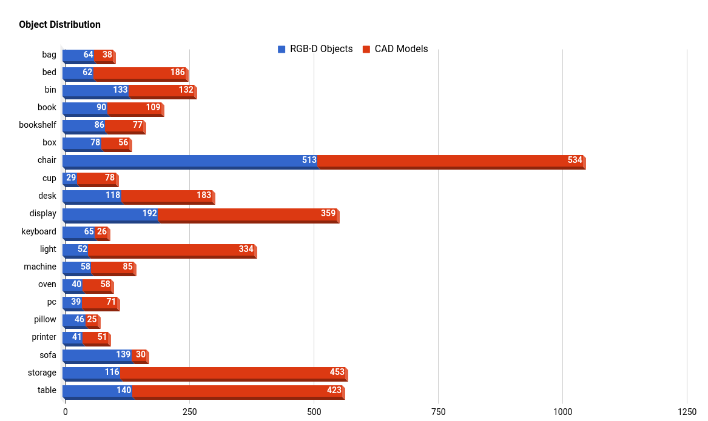

# Introduction Recent advances in consumer-grade depth sensors have enable the collection of massive real-world 3D objects. Together with the rise of deep learning, it brings great potential for large-scale 3D object retrieval. In this challenge, we aim to study and evaluate the performance of 3D object retrieval algorithms with RGB-D data. This is inspired from the practical applications such as scene modeling or online furniture product search, which need to pair an object acquired from a consumer-grade depth camera to 3D CAD models on the Internet. <br> # News **Mar 10, 2018**: The full track [report](./../pdf/rgbd2cad_shrec18.pdf) is now available. **Feb 26, 2018**: [Evaluation results](evaluation/index.html) are now available. Thank you all for participating! The evaluation scripts and ground truth can also be found [here](https://github.com/scenenn/shrec18). **Jan 28, 2018**: The [full dataset](http://103.24.77.34:8080/scenenn/shrec18/shrec18_full_jan28.zip) (6.2GB) is released! Please refer to the `README.md` file in the distribution for more details. **Jan 23, 2018**: Sampled dataset and queries are ready! You can download the data [here](http://103.24.77.34:8080/scenenn/shrec18/shrec18_sampled.zip). The full dataset will be released on Jan 28, 2018. **Jan 22, 2018**: Welcome! <br> # Schedule *Jan 22, 2018:* Call for participation on the SHREC and SceneNN homepage. *Jan 23, 2018:* Distribution of the sampled query and target datasets. *Jan 28, 2018:* Distribution of the full SHREC’18 query and target datasets. **Feb 01, 2018:** Registration deadline. **Feb 21, 2018:** Submit ranked lists and one-page description with at most two figures. *Feb 26, 2018:* Organizers perform automatic evaluations and release results. *Feb 28, 2018:* Submit track paper to SHREC for review. *Mar 03, 2018:* Reviews due. Notify authors of results. *Mar 10, 2018:* Submit camera-ready track papers for inclusion in the proceedings. **Apr 15-16, 2018:** Eurographics Workshop on 3D Object Retrieval 2018, featuring SHREC 2018. <br> # Dataset In this track, the query dataset consists of more than 2000 objects extracted from 3D reconstructed real-world indoor scene datasets (SceneNN [[1]](#ref1) and ScanNet [[8]](#ref8)) classified into 20 categories. Each object is represented as a 3D triangular mesh. Some example objects from our dataset are shown below:  The target dataset is a subset of ShapeNetSem [[2]](#ref2) that contains only models for indoor scenes. We adopt and modify the category definitions in NYU Depth Dataset V2 [[3]](#ref3) comprising more than 20 object classes such as table, chair, bookshelf, monitor, lamp, pillow, and so on. The object distribution is shown below. <center></center> As there is not a standard way to measure the similarity of two shapes, especially for an RGB-D object and a CAD model pair, to establish the ground truth for evaluation, we will manually pair an RGB-D object in the query set to some CAD models in the target set. The classification done by human will be based on geometric similarity between the objects. Each ground truth pair will belong to an object (sub-)category. The RGB-D queries are split into a training and a test set, which will be released to all participants, with the target CAD dataset. Being different from our first SHREC track in 2017, to pose a more challenging problem, categories for both RGB-D objects and CAD models will *not* be released. Participants will need to process the data before they are able to apply supervised learning techniques. On the other hand, we will provide example ranked lists for every RGB-D queries in the training set. Please note that the example ranked lists are *not* exhaustive, and will only cover a subset of the entire (sub-)category. <br> # Evaluation For each query model, each participant submits a ranked list where retrieved models are sorted according to similarity with the query model. Each ranked list is evaluated based on the ground truth category and subcategories. We use the following measures: - Precision-Recall curve; F-Score; Mean Average Precision (MAP); - Normalized Discounted Cumulative Gain (NDCG); - Nearest Neighbor First-Tier (Tier1) and Second-Tier (Tier2). NDCG metric will use a grade relevance to provide a more fine-grained evaluation, whereas other metrics will be evaluated on binay in-category versus out-of-category relevance. The grade relevance for NDCG is as follows: 2 for correct category and subcategory match, 1 for correct category match only, and 0 for false match. <br> <a name="submission"></a> ### Submission format By following the ShapeNet retrieval challenge, retrieval results for each query model should be saved to a simple text file. For example: File name: `rgbd.0b3d740c26394323a41872fbdf08e6f4.txt` (where `rgbd.0b3d740c26394323a41872fbdf08e6f4` is the query object ID). * Each line in the file has two values: `<objectID> <distance>` separated by a space character. The results are sorted with increasing distance (or decreasing similarity). The distance score is not used in evaluation, just for reference purposes. * The number of results per query model is capped at 1000. All result files should be packed into a zip file. To submit, please send a download link with an MD5 checksum of the zip file to the organizers at __scenenn[at]gmail.com__. <br> # Procedure 1. Each participant send an email to __scenenn[at]gmail.com__ for registration. 2. Each participant will submit a ranked list for each query model. For each query model, up to 5 ranked lists resulting from different algorithms or parameters can be submitted. 3. Each participant will also submit a one-page description of their method with up to two figures and discuss their results. 4. Automatic evaluations will be executed by the organizer. Results will be released to the participants. 5. The track results will be included in a joint paper to be submitted to the Eurographics Workshop on 3D Object Retrieval 2018. The paper will also be arXiv’ed in March 2018. 6. If accepted, the joint paper will be presented at the Eurographics Workshop on 3D Object Retrieval 2018. <br> # Organizers Quang-Hieu Pham, Singapore University of Technology and Design [Binh-Son Hua](http://sonhua.github.io/), Singapore University of Technology and Design <br> # Advisory Board [Lap-Fai (Craig) Yu](http://www.cs.umb.edu/~craigyu/), University of Massachusetts Boston [Duc Thanh Nguyen](http://ducthanhnguyen.weebly.com/), Deakin University [Sai-Kit Yeung](http://people.sutd.edu.sg/~saikit/), Singapore University of Technology and Design <br> # Contact If you have any questions, please email us at __scenenn[at]gmail.com__ <br> # Related Work Several 3D object retrieval challenges that use RGB-D query dataset had been organized in the past and are summarized in the following table: Track | Query Dataset | Target Dataset | Categories | Note --- | --- | --- | --- | --- NIST @ SHREC ‘15 [[4]](#ref4) | 60 RGB-D objects | 1200 CAD models | 60 | Geometry only DUTH @ SHREC ‘16 [[5]](#ref5) | 383 range-scan models | Similar to query dataset | 6 | Object from cultural heritage domain IUL @ SHREC ‘16 [[6]](#ref6) | 200 RGB-D objects | Similar to query dataset | N.A. | Objects scanned in lab setting ObjectNN @ SHREC ‘17 [[7]](#ref7) | 1667 partial RGB-D objects from SceneNN | 3308 CAD models from ShapeNetSem | 20 | Objects in real-world environment Ours | 2101 high-quality RGB-D objects from SceneNN and ScanNet | 3308 CAD models from ShapeNetSem | 20 | Objects in real-world environment As can be seen, our dataset more closely resembles a real-world setup where many objects are located in a scene and are captured in a single scene scan, generally resulting in objects being cluttered and only partially captured. This assumption poses more challenges to retrieval. Our query dataset also has a larger scale and higher quality compared to previous datasets. Compared to ObjectNN [7], we discard several partial and ambiguous objects and add several higher quality and more complete objects from state-of-the-art RGB-D datasets (SceneNN and ScanNet). <br> # References <span id='ref1'>[1]</span> SceneNN dataset, [http://scenenn.net] <span id='ref2'>[2]</span> ShapeNet dataset, [https://www.shapenet.org] <span id='ref3'>[3]</span> NYU Depth Dataset V2 dataset, [http://cs.nyu.edu/~silberman/datasets/nyu_depth_v2.html] <span id='ref4'>[4]</span> SHREC 2015: Range Scans based 3D Shape Retrieval, [http://www.itl.nist.gov/iad/vug/sharp/contest/2015/Range/] <span id='ref5'>[5]</span> SHREC 2016: Partial Shape Queries for 3D Object Retrieval, [https://vc.ee.duth.gr/shrec16/] <span id='ref6'>[6]</span> SHREC 2016: Shape Retrieval of Low-cost RGB-D Captures, [http://dataset.mldc.pt/dataset.html] <span id='ref7'>[7]</span> SHREC 2017: RGB-D Object-to-CAD Retrieval, [http://people.sutd.edu.sg/~saikit/projects/sceneNN/shrec17/index.html] <span id='ref8'>[8]</span> ScanNet dataset, [http://www.scan-net.org]